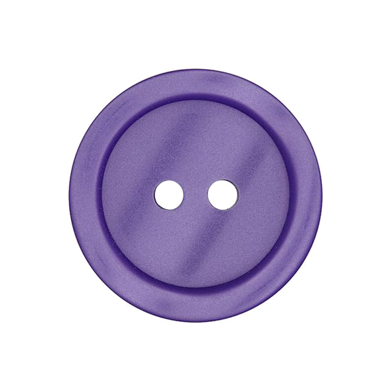

"Human Mimicking AI": Explore the intersection of physical and digital through touch.
Each interaction generates unique sound compositions that map the
emotional relationships between human and AI.

Interactions: 0/5
Dimensional Empathy Analysis
How your perceptions compare with the theoretical self-model of a human-mimicking AI system:
Analytical ↔ Embodied
AnalyticalEmbodied
Temporal ↔ Atemporal
TemporalAtemporal
Contextual ↔ Decontextualized
ContextualDecontextualized
Intuitive ↔ Computational
IntuitiveComputational
Your Uncanny Rating: 5/10
Your Emotional Response: --
Dimensional Gap: 40%
This suggests a moderate difference between your perception and this AI's attempt to mimic human behavior.